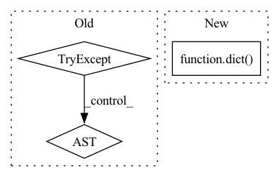

Pattern ID :4545
Before Change
cleaned_params = dict()
for key, val in six.viewitems(params):
try:
// _utils.python_to_val_proto(val)
pass
except TypeError:
continue
else:
cleaned_params.update({key: val})After Change
elif sklearn.base.is_regressor(fitted_estimator):
metrics = _get_regressor_metrics(fitted_estimator, "training_", X, y_true, sample_weight)
experiment = dict(
workspace_id=os.environ[NTCORE_WORKSPACE_ID],
runtime="python-" + ".".join(platform.python_version().split(".")[0:2]),
framework="sklearn",
metrics=metrics,
parameters=_get_params(self),
model=pickle.dumps(self)
)
try:
run.log_experiment(experiment)
except Exception as e:In pattern: SUPERPATTERN
Frequency: 3
Non-data size: 3
Instances Fragment ID: 16519976
Project Name: nantu-io/ntcore
Commit Name: 39230c7daf75594ebf4d971e97f2efc3a5815dbf
Time: 2021-10-19
Author: sean.tan.columbia@example.com
File Name: client/python/ntcore/integrations/sklearn/__init__.py
M Class Name: AnonimousClass
N Class Name: AnonimousClass
M Method Name: _fit_and_log(2)
N Method Name: _fit_and_log(2)
M Parent Class:
N Parent Class:
M File Name: client/python/ntcore/integrations/sklearn/__init__.py
N File Name: client/python/ntcore/integrations/sklearn/__init__.py
M Start Line: 92
M End Line: 118
N Start Line: 100
N End Line: 111
Before Change
else:
cleaned_params.update({key: val})
try:
run.log_hyperparameters(cleaned_params)
except :
pass // don"t halt execution
original_fit = gorilla.get_original_attribute(cls, "fit")After Change
elif sklearn.base.is_regressor(fitted_estimator):
metrics = _get_regressor_metrics(fitted_estimator, prefix, X, y_true, sample_weight)
experiment = dict(
workspace_id="C123",
metrics=metrics
)
try:
run.log_experiment(experiment)
except Exception as e: Fragment ID: 16519977
Project Name: nantu-io/ntcore
Commit Name: 5e355f826a40685242afcdeb94a0163fd03d16db
Time: 2021-09-29
Author: sean.tan.columbia@example.com
File Name: client/python/ntcore/integrations/sklearn/__init__.py
M Class Name: AnonimousClass
N Class Name: AnonimousClass
M Method Name: _fit_and_log(2)
N Method Name: _fit_and_log(2)
M Parent Class:
N Parent Class:
M File Name: client/python/ntcore/integrations/sklearn/__init__.py
N File Name: client/python/ntcore/integrations/sklearn/__init__.py
M Start Line: 88
M End Line: 109
N Start Line: 88
N End Line: 125
Before Change
better = True // whether we find a better model in one trial
if self._ensemble:
self.best_model = {}
try:
from ray.tune.suggest import ConcurrencyLimiter
except ImportError:
from .searcher.suggestion import ConcurrencyLimiter
if self._hpo_method in ("cfo", "grid"):
from flaml import CFO as SearchAlgo
After Change
self._config_history = {}
self._max_iter_per_learner = 1000000 // TODO
self._iter_per_learner = dict([(e, 0) for e in self.estimator_list])
self._ever_converged_per_learner = dict( [(e, False) for e in self.estimator_list])
self._fullsize_reached = False
self._trained_estimator = None
self._best_estimator = None
Fragment ID: 16519975
Project Name: microsoft/flaml
Commit Name: 10082b9262a862ef51cf09117bc5d13e43d1ca0d
Time: 2021-08-11
Author: qw2ky@virginia.edu
File Name: flaml/automl.py
M Class Name: AutoML
N Class Name: AutoML
M Method Name: _search(1)
N Method Name: _search(1)
M Parent Class:
N Parent Class:
M File Name: flaml/automl.py
N File Name: flaml/automl.py
M Start Line: 1187
M End Line: 1399
N Start Line: 1203
N End Line: 1454